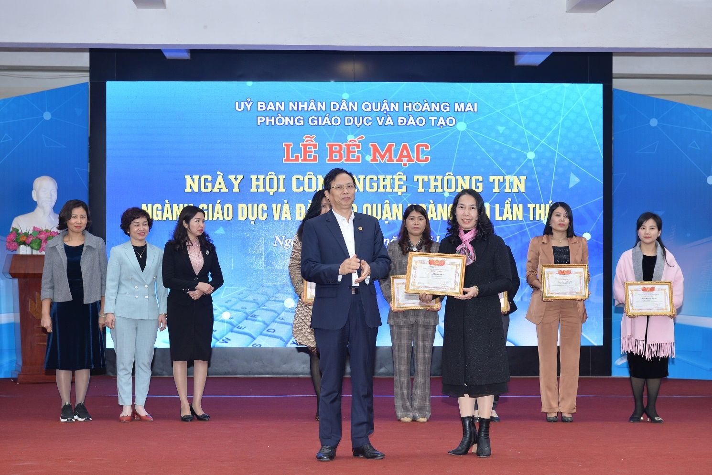

Trường Tiểu học Yên Sở đạt thành tích cao trong Ngày hội CNTT lần thứ V của Phòng GD & ĐT quận Hoàng Mai
Trường Tiểu học Yên Sở đã đạt 7 giải thưởng, trong đó có 4 giải cho các sản phẩm bài giảng E-learning, 02 giải thưởng dành cho phần thi kĩ năng công nghệ thông tin và 1 giải Tập thể.
Chiều ngày 25/01/2021, trường Tiểu học Yên Sở đã tham gia Ngày hội Công nghệ thông tin lần thứ V của ngành GD&ĐT quận Hoàng Mai với chủ đề Hưởng ứng phong trào “Chuyển đổi số trong giáo dục và đào tạo”.
Để hưởng ứng ngày hội CNTT do ngành Giáo dục Quận Hoàng Mai tổ chức, trường Tiểu học Yên Sở đã tích cực triển khai và tổ chức thực hiện có hiệu quả các nội dung trọng tâm của năm học 2020 - 2021, trong đó có lĩnh vực ứng dụng CNTT trong quản lý, giảng dạy được nhà trường triển khai là nhiệm vụ then chốt của năm học.
Việc ứng dụng công nghệ thông tin trong dạy học của nhà trường, đã giúp giáo viên nâng cao năng lực và tính sáng tạo, thông qua đó đã giúp cho giáo viên trở nên linh hoạt hơn trong quá trình giảng dạy của mình, giáo viên không bị bó buộc trong khối lượng kiến thức hiện có, mà còn giúp họ tìm hiểu thêm về những chuyên ngành khác như tin học và học hỏi các kỹ năng sử dụng hình ảnh, âm thanh trong việc thiết kế bài giảng E-lerning, bài giảng điện tử. Ngoài ra việc ứng dụng công nghệ thông tin trong dạy học, còn giúp giáo viên của trường có thể chia sẻ bài giảng của mình với đồng nghiệp, cùng nhau thảo luận và nâng cao chất lượng các bài giảng của mình.
Việc ứng dụng CNTT là điều kiện thuận lợi cho nhà trường trong việc đổi mới phương pháp và hình thức tổ chức các hoạt động dạy học. Thông qua việc ứng dụng CNTT của giáo viên trong các hoạt động học tập, đã khuyến khích và tạo điều kiện cho học sinh được chủ động để trải nghiệm, được thể hiện khả năng và ý kiến của bản thân được tạo mọi cơ hội để phát huy tính chủ động, sáng tạo của mình.
Đến với Hội thi CNTT lần thứ V của PGD&ĐT quận Hoàng Mai, trường Tiểu học Yên Sở có 4 bài giảng E learning dự thi; 1 đồng chí giáo viên, 1 đồng chí nhân viên thi kĩ năng CNTT. Kết quả cấp Quận: Trường đạt 7 giải. Trong đó gồm 1 giải Nhất thi kĩ năng CNTT của cô giáo Lê Hà Linh – GVCN lớp 5A2; 1 giải KK của đ/c Nguyễn Thị Vân Anh – nhân viên; 1 giải Nhì về Bài giảng E learning của nhóm tác giả Nguyễn Thị Nga và Trương Ánh Ngọc; 1 giải Ba bài giảng E learning của cô giáo Lê Hà Linh; 2 giải KK về Bài giảng E learning của nhóm tác giả Nguyễn Linh Chi và Nguyễn Thu Hằng; nhóm tác giả Đỗ Thị Ngân và Nguyễn Anh Thư; tập thể trường là một trong 9 tập thể của toàn ngành GD quận Hoàng Mai vinh dự được nhận giấy khen “Tập thể có thành tích tốt trong Ngày hội CNTT ngành GD&ĐT quận Hoàng Mai lần thứ V”.

Đ.c Trần Quý Thái – Phó Chủ tịch UBND Quận trao giấy khen cho tập thể nhà trường
Đ.c Phạm Đàm Thục Hạnh - Trưởng phòng GD trao tặng giấy khen cho nhóm tác giả Nguyễn Thị Nga và Trương Ánh Ngọc
Đ.c Trần Quý Thái - Phó Chủ tịch UBND Quận trao giấy khen cho cô giáo Lê Hà Linh